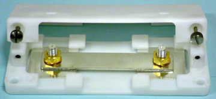
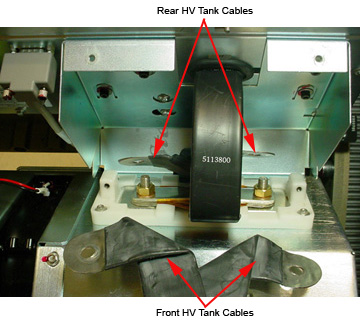

Proprietary to General Electric
Direction 5193891-800, Rev# 5
LightSpeed 5.X Pro16 Limited Access Service Information (Adv)
Proprietary to General Electric |
| Required Persons | Preliminary Reqs | Procedure | Finalization |
|---|---|---|---|
| 1 | Timing Not Applicable | 30 mins | Included |
The objective of this procedure is to verify that the HV power inverter is working properly. No X-rays are generated during this test. A summary of the procedure follows:
Short Inverter HV output
Run Diagnostic
Reconnect HV Tank
| Last Revised On: | 5 March, 2008 |
| Item | Qty | Effectivity | Part# | Manufacturer | |
|---|---|---|---|---|---|
| Inverter Short Circuit Test Tool,
used only with the newer style HV Tank cabling. Illustration 1: Inverter Short Circuit Test Tool  | 1 | - | Shipped with systems having the new style cabling. | - | |
| Condition | Reference | Eff |
|---|---|---|
Run the Shorted Inverter Test diagnostic after the Inverter Gate Command Test passes. | - | - |
| POTENTIAL FOR SHOCK. | |
| VOLTAGE MAY BE PRESENT. | |
| Use proper lockout/tagout procedures before replacing components. |
Remove gantry side and front covers.
Remove the EMC Box cover from the HV Inverter tank.
Determine if you have the older style HV Inverter Tank cables or the newer style HV Inverter Tank Cables (see Illustration 2 and Illustration 3). Follow the steps for your style of cables.
Disconnect the cables.
For the old style cables: At the HV Tank, disconnect one of the HV cable leads and connect it to the other, creating a short circuit, effectively removing the tank from the circuit (see Illustration 2).
(For LightSpeed Pro16 & RT) See HV Tank Replacement (Pro16, RT) for more information.
Illustration 2: Old Style HV Inverter Tank Cables

Illustration 3: New Style HV Inverter Tank Cables

For the new style cables:
At the HV Tank, remove the bolts holding the Inverter Output Cable.
Remove the Inverter Output Cable.
Remove the four HV Tank cables and fold them out of the way (see Illustration 4).
Replace the Inverter Output Cable on the stand offs.
Place the Inverter Short Circuit Test Tool over the cable and bolt it down (see Illustration 4).
Illustration 4: New Style HV Inverter Short Circuit Tool

Restore power to the gantry.
Enable the 120 VAC and HVDC using the Service Switch Panel, and then press ESTOP DRIVES RESET button.
On the Common Service Desktop, select Diagnostics>X-ray Generation >Generator Tool>kV Diagnostics. Click on [Inverter Short Circuit] . A screen displays instructions for running the test.
Click on [Confirm] to run the diagnostic.
When the diagnostic is finished, remove power to the gantry using the proper lockout/tagout procedure.
Reconnect the HV inverter/tank cables.
For the old style cables: Reconnect and route HV inverter/tank cables according to Inverter/Tank AC Wire Routing procedure.
For the new style cables: Reconnect the HV Inverter Tank cables to match Illustration 3.
If this test fails, and the Inverter Gate Command Test passed, your system probably has an inverter problem.
If the test passes, the sequence normally dictates that you move on to the No Load kV test to try to isolate your problem.